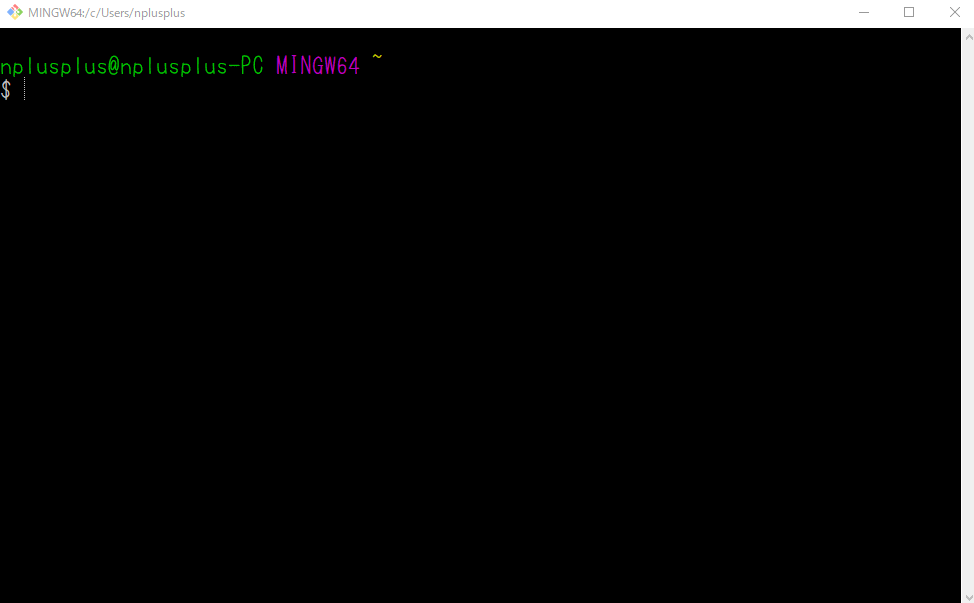

RPGツクールMV やさしいプラグインの書き方 基礎編
目次
メリークリスマス！
この記事はRPGツクールMV Advent Calendar 2017の記事（前半）です。
後半の記事については RPGツクールMV やさしいプラグインの書き方 応用編 へどうぞ
はじめに
誰が読めばいいの？
「やさしい書き方」と銘打ってはいますが、RPGツクールMVのプラグインを利用するすべての人に向けた内容を含みます。
gitを利用していない人にとってはちょっと慣れない話も出てくるかもしれませんが、これを覚えておけばゲームの開発効率の向上に繋がるので、余裕がある時にでも読んでみてください。
また、後半の記事にはRPGツクールMVのプラグインを読み書きする人に向けた内容も含みます。
これからプラグインを書いてみようと思っている人はもちろん、今プラグインを書いて公開している人にも是非読んでいただきたく思います。
筆者がWindowsユーザであるため、内容もWindowsユーザに向けたものになっています。
MacやLinuxを利用できる人はその時点でリテラシーが高いはずですので、適宜読み替えていけるものと思います。
どんな内容？
まず、前半の基礎編ではRPGツクールMVのプラグインを利用する上で、gitやgithubという強力なツールを利用する方法や、どう利用すると効率がよくなるかと言ったことに言及します。
また、プラグインを書かない人、利用するだけの人にとってもgithubが有用なツールであることも説明します。
RPGツクールMVのプラグインに関わる全ての人がgithubを利用できるようになり、それによって（ゲーム本編か、プラグインかに関わらず）効率的な開発を行えるようになることを目的としています。
なお、ゲームプロジェクトそのものをgithubで管理することについては既に多くの方が記事を書いていらっしゃるので、適当にググってそちらを参照されると良いと思います。
後半の応用編では、他の人のプラグインについて不具合の報告をしたり、修正したりすることについて言及した後、やさしいプラグインの書き方について説明します。基礎知識/準備
gitって何？ githubって何？
gitはバージョン管理システムです。（主に）プログラムのソースコードのバージョンを管理するための強力な補助ツールです。
githubはgitリポジトリをオンライン上で管理できるクラウドサービスです。
これだけではあまりピンと来ない方も少なからずいらっしゃるでしょうから、gitを使ったバージョン管理について具体的に説明します。
既にgitやgithubが何者であるかを理解し、その強力さをご存知の方であれば読み飛ばしていただいても構いません。
例えば、ある開発者がjavascriptを用いて大きめのプログラムを作ったとしましょう。
そのプログラムは、とうてい1ファイルに収まる規模のものではなく、main.js、rpg_core.js、rpg_manager.js、rpg_object.js…のようにいくつものファイルに分かれています。
今日はrpg_manager.jsを改造しよう、次の日はrpg_object.jsを改造しよう、そのまた次の日は……
こうして少しずつ改造を重ねたプログラムは、あの日どんなプログラムであったかを思い出すことが難しい程に巨大で複雑なものになっていきました。
あの時点のシンプルなコードに戻したい、あの時ここのコードはどんな形で書かれていたんだっけ？ あの時の更新が原因でバグが出てしまったから、それ以前のものに戻したい。
そんな欲求を満たすには、開発者はどうすれば良かったでしょうか。
プログラムを改造する前にそのコピーを取って、別の名前で保存しておく？
開発者はやる気に満ち満ちていて、毎日のようにプログラムを改造します。日に三回同じファイルを更新することだってあります。
そのたびに違う名前のファイルを作っていては、後で見返した時に、いったいどのファイルを開けば自分が遡りたいところまで行けるのかわかりません。
もしかしたら、一番大切な最新のファイルが有象無象の古いプログラムの山に埋もれて見えなくなってしまうかもしれません。
ファイル名の付け方を怠ければ、rpg_core最新.jsとか、rpg_core最新 - コピー.jsなんていう見るもおぞましいゴミの山が生まれることにもなりかねません。
更新内容をメモしたファイルを別に作っておき、ファイル名と対応付ける？
更新内容がごくごく小さいものであった場合、開発者は記録を怠けてしまうことでしょう。
一度怠けたらあとはそのままズルズルと……
後で対応付けのファイルを開いた時、そこには全く役に立たない大昔の更新内容が、三日坊主を体現した自らの怠惰を雄弁に物語っていることでしょう。
人の手による運用の占める割合が大きくなると、その運用はたいてい破綻するのです。
人の能力や勤勉さを決して過信してはいけません。
その過信や慢心が開発者自身を混乱させ、間違ったファイルを目的のものと思い込んで不必要なバグを生み、結果としてプログラム全体が壊れたり、完成が大幅に遅れたりするのです。
人間はあまりにも怠惰で、ポンコツです。
なので、機械に頼って生きていきましょう。
別々のファイル名をつけたり、更新内容を記録することである時点でのファイルがどんな状態であったかを管理しようとするこの行為は、人の記憶や勤勉さという信用ならないものによって支えられていて失敗しやすいとは言え、バージョン管理そのものです。
この作業に相当する内容の大部分を機械に任せることができればどうでしょうか。
gitによって、main.jsやrpg_core.js等、一つの大きなプログラムを構成する複数のファイルをまとめて リポジトリ を作ります。
そうすれば、開発者はコマンドライン上で
git add . |
と入力するだけで、その時点のプログラムの状態と、前回の更新からどういう更新をしたか、という内容を一度に記録できるのです。
（この記録する行為を コミットする と呼び、記録の単位を コミット と呼びます）
コミットにはそれぞれ重複しない識別番号（コミット番号）が与えられ、 git log コマンドによって番号と更新日時と更新内容を、更新日時が新しい順に一覧することができます。
もし、コミット番号 XXXXXX の時点に戻したくなったら、
git checkout hoge XXXXXX |
と入力するだけで該当のコミットに戻すことができます。
いちいちファイルをコピーして名前をつけて、その時の更新で何があったかをファイルに記録して……といった欠伸の出る眠たい作業をミスなく運用して、山のような不要なファイルを掘り返す。
たった2行のコマンドで得られた番号と記録の一覧を眺める。
どちらが開発者にとってやさしく、そして効率よく目的を達成できるかは言うまでもありませんね？
これがgitです。そして、そのgitで作られたリポジトリをクラウド上で管理できるサービスがgithubです。
githubはgitリポジトリの単純なバックアップとなるだけでなく、ウェブブラウザでリポジトリの状態を確認できたり、他の人のリポジトリを見たり、意見を交換したりもできます。
gitやgithubはプログラムを書く上で極めて強力なサポートツールなのです。
これはRPGツクールMVのプラグインにとっても例外ではありません。
プラグインの利用者にとっても、そのプラグインがどの時点で更新されたものなのか知っておくことは重要です。（詳しくは後述します）
では、次のセクションからは実際にgitやgithubを使ってみましょう。
gitをインストールしよう
Git for Windows をダウンロードしてインストールしましょう。
gitに加え、優秀なコマンドラインツールgit bashもインストールされます。
gitリポジトリに対する操作は基本的にこのGit Bashを利用することになります。
Git Bashを起動しよう
スタートメニュー等からGit Bashを起動しましょう。
このような画面が表示されるはずです。

まずはじめにユーザ名とメールアドレスをローカルに登録しておくと良いです。
必須ではありませんが、これをしておくとコミット履歴に名前が残ります。
もしプラグインを書いたり、他の人のプラグインにちょっとした修正をかけたり、もちろん、自分のゲームプロジェクトをgithubで管理するといった場合にもこれをしておくと良いでしょう。
起動したGit Bash上で以下の二つのコマンドを入力してください。
git config --global user.name "gitで用いるハンドルネーム" |
このコマンドが通ったかどうかは以下のコマンドで確認できます。
git config -l | grep user |
先程のコマンドで設定した名前とメールアドレスが出てきたら成功です。
名前とメールアドレスの設定は何度でもやり直すことができます。
プラグインをクローンする準備
Cドライブの下に rmmv-plugins と言った名前のフォルダを作成して、Git Bashに
cd C:\rmmv-plugins |
と入力してみてください。cdはchange directoryの略で、Git Bashが今見ているディレクトリ（フォルダ）を変更する、という意味です。
対象のフォルダにcdすることを、今後 フォルダに入る と表現します。
この記事では例として、rmmv-pluginsフォルダの下に、github上のプラグインをコピーしてきます。
フォルダの名前や場所は自由ですので、こだわる人は各自フォルダを作ってそこに cd してください。
いちいちエクスプローラを開いてフォルダを作る操作が面倒だなと思い始めたら mkdir コマンドを試してみるのも良いでしょう。
ここで開いたGit Bashは後ほど、実際にgithub上のプラグインをコピーする際に使用しますので、慣れていない方は起動したままにしておくと良いでしょう。
GitHubにアカウントを登録しよう
プラグインを利用するだけであれば必須ではありません。
GitHubにSignUpしてユーザ登録すると、自分のgitリポジトリをGitHub上にアップロードしたりできます。
他のプラグイン作者のリポジトリをWatchしたりもできるので、プラグインを利用するだけであっても、可能であれば登録しておくことをおすすめします。
SSH公開鍵をGitHubに登録しよう
これもプラグインを利用するだけなら必須ではありません。
もしプログラムを書いたり修正したりするのであれば、 お前らのSSH Keysの作り方は間違っている - Qiita に書かれた方法に従ってSSH鍵を新規作成し、GitHubに登録しましょう。
これでgithubを利用する準備は完了です。
プラグインを利用する
このセクションでは、プラグインを利用する際のgit/githubの使い方について説明します。
git cloneしよう
単にプラグインをダウンロードするだけでも良いですが、github上に公開されているリポジトリはgit cloneコマンドによってすべてローカルにコピーすることができます。
試しに私のRPGツクールMVプラグインをまとめたリポジトリをクローンしてみましょう。
Git Bashに以下のように入力してください。
git clone https://github.com/elleonard/RPGtkoolMV-Plugins.git |
もしくは、githubにSSH鍵を登録している方は以下でも構いません。
git clone git@github.com:elleonard/RPGtkoolMV-Plugins.git |
gitコマンドによってgithub上のリポジトリがローカルにコピーされます。cd RPGtkoolMV-Plugins と入力すればコピー先のフォルダに入ることができ、フォルダ名の横に (master) という表示が出ます。
（プラグインを利用するだけであれば、この意味は理解しなくても問題ありません。Git Bashがリポジトリの中を見ているのだ、というだけです）
RPGツクールMVで利用するためには .js ファイルを js/plugins フォルダの下にコピーする必要があります。
リポジトリをcloneするこの方法では .js ファイルを直接ダウンロードするよりも一手間増えています。
では何故、この一手間をかけることが開発効率の向上に繋がるのでしょうか。
プラグインは更新されることがある
github上のプラグインは作者の意思で更新されることがあります。
プラグインの作者も人間ですので、プラグインを書く際に間違いを犯したりバグを仕込んでしまったりします。
そういった時にバグ修正をしたり、あるいは機能を増やすためにプラグインをバージョンアップすることもあります。
バージョンアップの頻度にもよりますが、利用者がダウンロードしたタイミングによってプラグインの内容が変わっていることが少なからずあるのです。
「あれ？ このプラグインを入れたら挙動がおかしくなったぞ？」
「他のプラグインと競合しちゃってるのかな？」
プラグインを読んだり書いたりしないゲーム制作者でも、こういった状況に遭遇することはあるでしょう。
そういう時に作者に質問をすることは悪いことではないのですが、何度もバージョンアップされたプラグインの場合、どの時点のものかわからないと質問された側も答えようがありません。
ところで、gitはバージョン管理システムです。
基礎知識のセクションで説明した通り、 git log コマンドを使用すればそのリポジトリがどの時点のものかわかります。git clone コマンドはその時点のリポジトリの状態をまるごとコピーしてくるので、Git Bashでそのディレクトリの中に入って git log コマンドを使用すればコミット番号やコミット日時がわかるのです。
また、github上のリポジトリで公開されているプラグインであれば、github上でそのファイルの更新日時やリポジトリの最新のコミット番号を確認できます。
つまり、今利用しているプラグインが最新のものであるかどうかくらいは、git log の結果とgithub上の表示を照らし合わせることで確認ができるのです。
最新でない場合は最新にすることで問題が解消するかもしれませんし、最新であるにも関わらず思い通りの動きをしてくれないのであれば、その旨を作者に伝えることができます。
作者の側からすれば、質問を受けた後いちいち「最新のプラグインを使っていますか？」という打ち返しをせずに済むのです。
作者の答える手間ももちろん、質問する側が望みの回答を得るまでの時間も短縮され、嬉しいことだらけですね。
もし、最新の更新を取り込みたいのであれば、Git Bashでクローンしたフォルダの中へ入って、以下のコマンドを入力してください。
git pull origin master |
詳しい説明は省きますが、この場合の git pull は、github上の更新を取り込むという意味です。
このコマンドが実行されると、Git Bashで見ているローカルのリポジトリが、github上の最新のコミットで更新されます。
最新版のダウンロードも、コマンド一行だけでできてしまう、というわけですね。
プラグインを利用する方にとっての記事はここまでです。
完全な初心者に向けてできるだけわかりやすく書いたつもりでしたが、それでも新しいことを覚えるのは難しいことと思います。
今すぐにすべてできるようになる必要はもちろんなく、けれど将来的にちょっとずつgitと仲良くなっていくと、開発効率も少しずつ良くなることでしょう。
ですので、他の作業に詰まった時の気分転換にでもこの記事の内容を思い返していただければと思います。
そして、ここまでの内容を実践し理解された方は次のRPGツクールMV やさしいプラグインの書き方 応用編で「プラグインを修正する」「不具合を報告する」と言った内容に是非挑戦してみてください。
余談：セマンティックバージョニング
これは長い記事を読んで疲れた方向けのちょっとした余談ですので、読み飛ばしていただいても問題ありません。
プラグインには、説明にバージョン番号が書かれていることがあります。
1.0.3 のような表記に見覚えのある方は少なくないでしょう。
（有名なところでは某きのこ印の大先生がこのバージョニングを行っていますね）
このバージョン、実は適当につけられているものではありません。
基本的にセマンティックバージョニングという決まりごとに従ってつけられているものです。
上記ページの説明を噛み砕いてみます。
バージョン x.y.z のうちの x がメジャーバージョン y がマイナーバージョン z がパッチバージョンと呼ばれます。
プラグインの更新があった場合にこのうちのいずれかのバージョンが上がるわけですが、どれが上がるかは更新内容によって決まります。
互換性のない更新があった場合、つまり、js/plugins下のプラグインを更新後のもので上書きすると以前のように動かなくなる場合（以前できていた正常な動作を以前と同じ設定では再現できなくなる場合）はメジャーバージョンが上がります。
メジャーバージョンは基本的に（良い開発者であれば）滅多に上がりません。メジャーバージョンを上げるということは、利用者がプラグインを更新する際、以前の動作を再現するためにプラグインパラメータの設定を見直す手間をかけねばならないということです。
そんな更新が頻繁に入っていたら、利用者はどの時点のものを利用したら良いかわからなくなってしまいますね。
いちいち最新の更新に利用者が追従するのがコストになってしまうので、そういうプラグインは「利用者にやさしくない」ものになってしまいます。
なので、いい加減皆さんも忘れた頃であろうこの記事のタイトル「やさしいプラグインの書き方」に従って書くならば、メジャーバージョンは頻繁に上げるべきではない、ということです。
互換性はあるが新しい機能を追加するような修正があった場合はマイナーバージョンが上がります。
例えば、メニューから開ける新しい画面を追加するようなプラグインについて、その新しい画面をマップ上からショートカットキーで開けるようにする更新、というのはこの場合に当てはまるでしょう。
そして、互換性があり機能追加ではなく小さなバグ修正のみがあった場合は、パッチバージョンが上がります。
利用者にとって、マイナーバージョンとパッチバージョンの更新は（たいていの場合）すぐに取り込んでしまっても問題ないもの、という意味です。
メジャーバージョンの更新があった場合は、その更新を取り込むために手間がかかることを意味しているので、更新内容次第では慎重になるべきでしょう。
ただし、これらの決まりごとはメジャーバージョンが0の場合には当てはまりません。
メジャーバージョン0のものはひたすら高速に頻繁にアップデートされる可能性があり、プラグインとして安定していないので多くの場合取り込むべきではないです。
（もちろん、メジャーバージョン0のプラグインを公開している人がいたとしたら、の話ですが）
セマンティックバージョニングを初めて見る人にとっては直感に反することかもしれませんが、実はそれぞれのバージョンは桁数の制限がありません。
例えば、1.0.9の時点で互換性のあるバグ修正が入った場合、バージョンは1.0.10になります。
どこかが繰り上がって上位のバージョンに影響を与える、などということはありません。
しかしメジャーバージョンが更新された時にはマイナーバージョンとパッチバージョンが、マイナーバージョンが更新された時にはパッチバージョンが0になります。
つまり、 1.0.10 から、互換性のある機能追加が行われた場合には 1.1.0 になります。
互換性のない更新があった場合は、 2.0.0 となるのです。